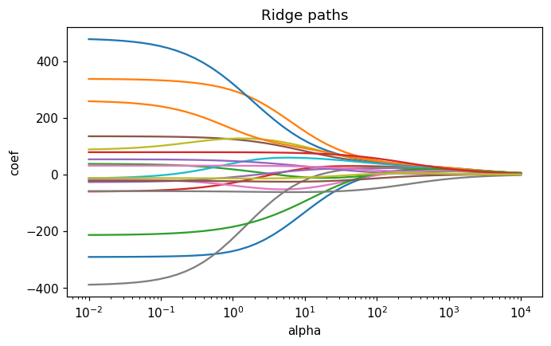
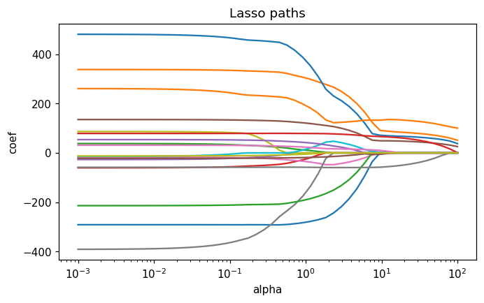

This notebook runs on Colab as-is. The badge link above and the GITHUB_RAW line in the setup cell already point to this repository, so everything installs and loads automatically.
Chapter 6 — Model Selection and Regularisation¶
Lab: subset selection, ridge, lasso¶
Course: Quantitative Research Methods
Instructor: Prof. Dr. Christoph Weisser
Source: James, Witten, Hastie, Tibshirani & Taylor (2023), An Introduction to Statistical Learning, with Applications in Python, Springer. Companion code at statlearning.com.
Goal. On the Hitters data, fit best-subset and forward stepwise selection, ridge, and lasso, and compare them by cross-validation.
Setup¶
Run this cell once. The ISLP package can be installed with pip install ISLP. As an alternative, the same data sets are available as CSVs in the workspace’s ALL CSV FILES - 2nd Edition folder.
Google Colab: this notebook also runs on Colab out of the box — the setup cell below installs any missing packages and downloads the data automatically.
# --- Setup: runs locally AND on Google Colab --------------------------------
# Silence only the spurious 'encountered in matmul' RuntimeWarnings that the macOS
# Accelerate BLAS emits; real warnings (deprecations, model caveats) stay visible.
import warnings
warnings.filterwarnings('ignore', message='.*encountered in matmul', category=RuntimeWarning)
import importlib.util, os, subprocess, sys
IN_COLAB = 'google.colab' in sys.modules
def _ensure(pkg, import_name=None):
"""pip-install pkg (quietly) if its import is missing."""
if importlib.util.find_spec(import_name or pkg) is None:
subprocess.run([sys.executable, '-m', 'pip', 'install', '-q', pkg], check=False)
if IN_COLAB: # Colab ships numpy/pandas/sklearn/statsmodels; add course extras
for _pkg, _imp in [('ISLP', 'ISLP')]:
_ensure(_pkg, _imp)
import numpy as np
import pandas as pd
import matplotlib.pyplot as plt
rng = np.random.default_rng(2024)
plt.rcParams['figure.dpi'] = 110
try:
from ISLP import load_data
HAVE_ISLP = True
except ImportError:
HAVE_ISLP = False
print('ISLP not installed; using CSV / URL fallbacks.')
# Local CSV location (repo layout first, then legacy paths, then a data/ cache).
_CANDIDATES = ['../ALL CSV FILES - 2nd Edition',
'ALL CSV FILES - 2nd Edition',
'../../ALL CSV FILES - 2nd Edition', 'data']
CSV = next((p for p in _CANDIDATES if os.path.isdir(p)), 'data')
# GITHUB_RAW lets a fresh Colab runtime fetch any
# CSV that is neither in ISLP nor already local (spaces in the folder -> %20).
GITHUB_RAW = ('https://raw.githubusercontent.com/ChrisW09/Quantitative-Research-Methods/main/'
'ALL%20CSV%20FILES%20-%202nd%20Edition')
# The four datasets NOT in the ISLP package -> load from the book's official
# site so the notebook works on a fresh Colab even before the repo is published.
KNOWN_URLS = {
'Advertising': 'https://www.statlearning.com/s/Advertising.csv',
'Heart': 'https://www.statlearning.com/s/Heart.csv',
'Income1': 'https://www.statlearning.com/s/Income1.csv',
'Income2': 'https://www.statlearning.com/s/Income2.csv',
}
def load(name, **read_csv_kwargs):
"""Load a course dataset. Order: ISLP package -> R datasets -> local CSV
-> official book URL -> your GitHub repo. Works locally and on Colab."""
if HAVE_ISLP:
try:
return load_data(name)
except Exception:
pass
if name == 'USArrests': # classic R dataset, not in ISLP
try:
import statsmodels.api as sm
return sm.datasets.get_rdataset('USArrests', 'datasets').data
except Exception:
pass
path = f'{CSV}/{name}.csv'
if os.path.exists(path): # running from the repo (local)
return pd.read_csv(path, **read_csv_kwargs)
remotes = ([KNOWN_URLS[name]] if name in KNOWN_URLS else []) + [f'{GITHUB_RAW}/{name}.csv']
for url in remotes: # fresh Colab: stream over https
try:
return pd.read_csv(url, **read_csv_kwargs)
except Exception:
continue
raise FileNotFoundError(
f"Could not load {name!r}. Put the CSV in '{CSV}/' or check your connection for the GITHUB_RAW fallback.")
1. Hitters data¶
Major-league batting records with Salary as the response. dropna() removes the 59 players whose salary is missing, leaving 263 — a small \(n\) against 19 predictors after dummy coding, which is precisely the regime where selection and shrinkage earn their keep.
Note the predictors are heavily collinear by construction: CAtBat, CHits, CRuns, CRBI and CWalks are all career totals of a long career. Least squares handles that badly, and how each method copes with it is the real subject of this chapter.
Hitters = load('Hitters').dropna().reset_index(drop=True)
y = Hitters['Salary']
X = Hitters.drop(columns='Salary')
X = pd.get_dummies(X, drop_first=True).astype(float)
print(X.shape); X.head()
(263, 19)
| AtBat | Hits | HmRun | Runs | RBI | Walks | Years | CAtBat | CHits | CHmRun | CRuns | CRBI | CWalks | PutOuts | Assists | Errors | League_N | Division_W | NewLeague_N | |
|---|---|---|---|---|---|---|---|---|---|---|---|---|---|---|---|---|---|---|---|
| 0 | 315.0 | 81.0 | 7.0 | 24.0 | 38.0 | 39.0 | 14.0 | 3449.0 | 835.0 | 69.0 | 321.0 | 414.0 | 375.0 | 632.0 | 43.0 | 10.0 | 1.0 | 1.0 | 1.0 |
| 1 | 479.0 | 130.0 | 18.0 | 66.0 | 72.0 | 76.0 | 3.0 | 1624.0 | 457.0 | 63.0 | 224.0 | 266.0 | 263.0 | 880.0 | 82.0 | 14.0 | 0.0 | 1.0 | 0.0 |
| 2 | 496.0 | 141.0 | 20.0 | 65.0 | 78.0 | 37.0 | 11.0 | 5628.0 | 1575.0 | 225.0 | 828.0 | 838.0 | 354.0 | 200.0 | 11.0 | 3.0 | 1.0 | 0.0 | 1.0 |
| 3 | 321.0 | 87.0 | 10.0 | 39.0 | 42.0 | 30.0 | 2.0 | 396.0 | 101.0 | 12.0 | 48.0 | 46.0 | 33.0 | 805.0 | 40.0 | 4.0 | 1.0 | 0.0 | 1.0 |
| 4 | 594.0 | 169.0 | 4.0 | 74.0 | 51.0 | 35.0 | 11.0 | 4408.0 | 1133.0 | 19.0 | 501.0 | 336.0 | 194.0 | 282.0 | 421.0 | 25.0 | 0.0 | 1.0 | 0.0 |
2. Best-subset and forward stepwise selection¶
Best subset asks, for each size \(k\), which \(k\) predictors give the lowest RSS — by fitting every combination. Forward stepwise starts empty and adds whichever single predictor most reduces RSS, never revisiting an earlier choice.
Note the cap at \(k \le 5\) below. That is not a pedagogical simplification; it is a computational necessity, and §6 measures exactly how bad it gets.
import itertools, statsmodels.api as sm
from sklearn.metrics import mean_squared_error
preds = X.columns.tolist()
best = {}
for k in range(1, 6):
best_rss, best_combo = None, None
for combo in itertools.combinations(preds, k):
rss = sm.OLS(y, sm.add_constant(X[list(combo)])).fit().ssr
if best_rss is None or rss < best_rss:
best_rss, best_combo = rss, combo
best[k] = best_combo
best
{1: ('CRBI',),
2: ('Hits', 'CRBI'),
3: ('Hits', 'CRBI', 'PutOuts'),
4: ('Hits', 'CRBI', 'PutOuts', 'Division_W'),
5: ('AtBat', 'Hits', 'CRBI', 'PutOuts', 'Division_W')}
# Forward stepwise
remaining = preds.copy(); selected = []
for step in range(8):
best_rss, best_v = None, None
for v in remaining:
rss = sm.OLS(y, sm.add_constant(X[selected + [v]])).fit().ssr
if best_rss is None or rss < best_rss:
best_rss, best_v = rss, v
selected.append(best_v); remaining.remove(best_v)
print(step + 1, '->', selected[-1], 'RSS =', round(best_rss, 1))
1 -> CRBI RSS = 36179679.3
2 -> Hits RSS = 30646559.9
3 -> PutOuts RSS = 29249296.9
4 -> Division_W RSS = 27970851.8
5 -> AtBat RSS = 27149899.4
6 -> Walks RSS = 26194903.9
7 -> CWalks RSS = 25954217.1
8 -> CRuns RSS = 25159233.9
Reading the output. RSS falls monotonically as predictors are added — it must, since adding a column can never increase the achievable RSS. That is why RSS cannot choose \(k\), and why \(C_p\), BIC and cross-validation exist.
Compare the two searches at \(k = 5\): best subset picks AtBat, Hits, CRBI, PutOuts, Division_W, and forward stepwise arrives at the same five in the order CRBI, Hits, PutOuts, Division_W, AtBat. They agree here — but they need not, and that is the point. Forward stepwise commits to CRBI at step 1 and can never drop it, so a pair of predictors that only works together is invisible to it.
3. Ridge regression¶
Here and for the lasso below, the penalty is selected with the scaler nested inside the search: standardising all 263 rows first and only then letting RidgeCV/LassoCV split would score every candidate \(\lambda\) on data whose means and standard deviations were computed with help from the very rows being held out.
from sklearn.linear_model import Ridge
from sklearn.preprocessing import StandardScaler
from sklearn.pipeline import make_pipeline
from sklearn.model_selection import GridSearchCV, LeaveOneOut
alphas = np.logspace(-2, 4, 50)
ridge_cv = GridSearchCV(make_pipeline(StandardScaler(), Ridge()), # scaler per fold
{'ridge__alpha': alphas},
cv=LeaveOneOut(), # RidgeCV's own default is leave-one-out
scoring='neg_mean_squared_error').fit(X, y)
ridge = ridge_cv.best_estimator_.named_steps['ridge']
print('best alpha:', ridge_cv.best_params_['ridge__alpha'])
print(pd.Series(ridge.coef_, index=X.columns).round(2))
best alpha: 2.8117686979742307
AtBat -229.01
Hits 245.55
HmRun 4.61
Runs -5.48
RBI 2.44
Walks 110.78
Years -50.10
CAtBat -115.25
CHits 123.26
CHmRun 56.29
CRuns 220.11
CRBI 120.98
CWalks -154.21
PutOuts 77.87
Assists 40.90
Errors -24.92
League_N 30.46
Division_W -61.51
NewLeague_N -13.75
dtype: float64
Ridge coefficient paths¶
from sklearn.linear_model import Ridge
Xs = StandardScaler().fit_transform(X)
paths = np.array([Ridge(alpha=a).fit(Xs, y).coef_ for a in alphas])
fig, ax = plt.subplots(figsize=(7, 4))
for j, name in enumerate(X.columns):
ax.plot(alphas, paths[:, j], label=name)
ax.set_xscale('log'); ax.set_xlabel('alpha'); ax.set_ylabel('coef')
ax.set_title('Ridge paths'); plt.show()

4. Lasso¶
Same objective as ridge with the penalty in \(\ell_1\) rather than \(\ell_2\): \(\lambda\sum_j |\beta_j|\) instead of \(\lambda\sum_j \beta_j^2\). That one change makes the difference between shrinking coefficients and zeroing them, so the lasso performs selection and shrinkage in a single fit.
Two implementation points that matter more than they look:
StandardScaleris a step inside the pipeline, so it is re-fitted on each of the 10 CV folds. Scaling before the split would leak the validation folds’ means into the training data.Penalising \(|\beta_j|\) is only meaningful once the predictors share a scale — otherwise the penalty is a statement about units, not importance.
from sklearn.linear_model import Lasso
alphas = np.logspace(-3, 2, 50)
lasso_cv = GridSearchCV(make_pipeline(StandardScaler(), Lasso(max_iter=100000)),
{'lasso__alpha': alphas}, # scaler re-fit on each of the 10 folds
cv=10, scoring='neg_mean_squared_error').fit(X, y)
lasso = lasso_cv.best_estimator_.named_steps['lasso']
print('best alpha:', lasso_cv.best_params_['lasso__alpha'])
coefs = pd.Series(lasso.coef_, index=X.columns)
print('non-zero:', coefs[coefs != 0].round(2))
best alpha: 2.329951810515372
non-zero: AtBat -243.56
Hits 266.12
HmRun 0.03
Walks 106.57
Years -47.64
CHmRun 47.06
CRuns 230.24
CRBI 122.30
CWalks -150.86
PutOuts 76.96
Assists 27.85
Errors -14.46
League_N 16.38
Division_W -59.59
dtype: float64
Lasso paths¶
Xs = StandardScaler().fit_transform(X)
paths = np.array([Lasso(alpha=a, max_iter=10000).fit(Xs, y).coef_ for a in alphas])
fig, ax = plt.subplots(figsize=(7, 4))
for j in range(paths.shape[1]):
ax.plot(alphas, paths[:, j])
ax.set_xscale('log'); ax.set_xlabel('alpha'); ax.set_ylabel('coef')
ax.set_title('Lasso paths'); plt.show()

5. How many models did we skip?¶
The deck’s Exercise 6.1 counts the search spaces. Best subset considers every subset of \(p\) predictors,
while forward stepwise fits \(p - k\) models at step \(k\), giving \(1 + p(p+1)/2\) in total. With \(p = 19\) that gap is the reason §2 stopped at \(k = 5\).
from math import comb
p = X.shape[1]
best_subset_total = 2 ** p
forward_total = 1 + p * (p + 1) // 2
actually_fitted = sum(comb(p, k) for k in range(1, 6)) # what section 2 really ran
print(f'predictors p : {p}')
print(f'best subset, all sizes (2^p) : {best_subset_total:,}')
print(f'what section 2 fitted (k <= 5) : {actually_fitted:,}')
print(f'forward stepwise, all sizes : {forward_total:,}')
print()
print(f'best subset / forward stepwise : {best_subset_total / forward_total:,.0f}x more models')
# The deck's worked case, p = 10.
p10 = 10
print(f'\ndeck example, p = 10: best subset {2 ** p10:,} vs forward {1 + p10 * (p10 + 1) // 2}')
predictors p : 19
best subset, all sizes (2^p) : 524,288
what section 2 fitted (k <= 5) : 16,663
forward stepwise, all sizes : 191
best subset / forward stepwise : 2,745x more models
deck example, p = 10: best subset 1,024 vs forward 56
Reading the output. With \(p = 19\), best subset means 524,288 fits against forward stepwise’s 191 — about 2,700 times more work — and even the truncated \(k \le 5\) search in §2 fitted 16,663 models. The deck’s \(p = 10\) case is the gentler illustration: 1,024 against 56.
Two conclusions follow, and they are the reason the rest of the chapter exists. First, exhaustive search is not a strategy that scales; \(p = 40\) is already a trillion models. Second, and less obvious: searching half a million models means the winner’s training RSS is optimistically biased by the search itself, so the selected model must still be judged by CV on data the search never saw. Ridge and the lasso sidestep the combinatorial problem entirely by fitting one continuous path instead.
6. Exercises¶
Run backward stepwise selection and compare with forward.
Use the one-standard-error rule to choose a more parsimonious lasso \(\lambda\).
Fit elastic net on Hitters with
ElasticNetCV. How does it compare to ridge and lasso?Standardise
Xonce before the cross-validated search instead of inside the pipeline. How far does the chosen \(\lambda\) move, and why?
Lecture exercises — worked Python solutions¶
The cells below mirror the [Python]-tagged exercises from the Chapter 6 lecture slides, with fully worked, runnable solutions and the expected numeric answers (stored as inline comments). Each solution reloads Hitters through the load() helper so it stands alone and reproduces the slide numbers.
Exercise 6.6 — CV Ridge and Lasso on Hitters [Python]¶
On the Hitters data (predict Salary): (i) fit the lasso with a cross-validated \(\lambda\) on standardised predictors, (ii) report the selected \(\lambda\), and (iii) list which features the lasso keeps versus drops. Contrast with ridge, which keeps every predictor.
# Exercise 6.6 -- lasso vs ridge with a cross-validated penalty on Hitters.
from sklearn.linear_model import Lasso, Ridge
from sklearn.preprocessing import StandardScaler
from sklearn.pipeline import make_pipeline
from sklearn.model_selection import GridSearchCV
df = load('Hitters').dropna() # drop the 59 rows with NA Salary
yH = df['Salary'].values
X_raw = pd.get_dummies(df.drop(columns='Salary'), # encode League/Division/NewLeague
drop_first=True).astype(float)
preds = X_raw.columns
print('n, p =', X_raw.shape) # (263, 19)
# Standardising matters (the penalty is scale-dependent), but it has to happen
# INSIDE the pipeline: GridSearchCV then re-fits the scaler on each training
# fold, so no validation fold ever helps set the scaling used to train.
lasso_cv = GridSearchCV(make_pipeline(StandardScaler(), Lasso(max_iter=100000)),
{'lasso__alpha': np.logspace(-3, 2, 50)},
cv=10, scoring='neg_mean_squared_error').fit(X_raw, yH)
lasso = lasso_cv.best_estimator_.named_steps['lasso'] # CV lambda
print('lasso alpha :', round(lasso_cv.best_params_['lasso__alpha'], 3)) # 2.33
kept = [p for p, c in zip(preds, lasso.coef_) if abs(c) > 1e-8]
dropped = [p for p, c in zip(preds, lasso.coef_) if abs(c) <= 1e-8]
print('kept :', kept) # Hits, Walks, CRBI, PutOuts, Division_W, ...
print('dropped :', dropped) # Runs, RBI, CAtBat, CHits, NewLeague_N
ridge_cv = GridSearchCV(make_pipeline(StandardScaler(), Ridge()), # same recipe
{'ridge__alpha': np.logspace(-2, 4, 50)},
cv=10, scoring='neg_mean_squared_error').fit(X_raw, yH)
ridge = ridge_cv.best_estimator_.named_steps['ridge']
print('ridge alpha :', round(ridge_cv.best_params_['ridge__alpha'], 3),
'-- nonzero coefs:', int(np.sum(np.abs(ridge.coef_) > 1e-8))) # 2.812 -- 19
n, p = (263, 19)
lasso alpha : 2.33
kept : ['AtBat', 'Hits', 'HmRun', 'Walks', 'Years', 'CHmRun', 'CRuns', 'CRBI', 'CWalks', 'PutOuts', 'Assists', 'Errors', 'League_N', 'Division_W']
dropped : ['Runs', 'RBI', 'CAtBat', 'CHits', 'NewLeague_N']
ridge alpha : 2.812 -- nonzero coefs: 19
Interpretation. The lasso selects a moderate \(\lambda\approx2.33\) and drives several coefficients exactly to zero — it keeps strong career/recent-performance predictors (e.g. Hits, Walks, CRBI, PutOuts, Division_W) and drops weak or redundant ones (Runs, RBI, CAtBat, CHits, NewLeague_N). Ridge keeps all 19 predictors nonzero (it only shrinks). Takeaway: the lasso yields a sparse, more interpretable model via automatic variable selection, whereas ridge stabilises the fit while retaining every predictor. Note where the standardisation lives: it is a pipeline step that GridSearchCV re-fits on every training fold, because a scaler fitted once on the whole matrix has already seen each validation fold — the leakage the Chapter 5 lab warns about.
Extended Exercise 6.3 — CV Ridge and Lasso Test MSE on Hitters [Python]¶
Split Hitters into train/test, standardise using the training set only (no leakage), and cross-validate \(\lambda\) for both ridge and lasso. Report each chosen \(\lambda\), the test MSE, and how many coefficients are non-zero; list the predictors the lasso drops.
# Extended Exercise 6.3 -- honest test-MSE comparison with leak-free scaling.
from sklearn.model_selection import train_test_split
from sklearn.preprocessing import StandardScaler
from sklearn.linear_model import RidgeCV, LassoCV
from sklearn.metrics import mean_squared_error
df = load('Hitters').dropna(subset=['Salary']) # drop rows with NA response
yH = df['Salary'].values
XH = pd.get_dummies(df.drop(columns='Salary'),
drop_first=True).astype(float)
Xtr, Xte, ytr, yte = train_test_split(XH.values, yH,
test_size=0.33, random_state=1) # 2/3 - 1/3 split
sc = StandardScaler().fit(Xtr) # fit scaler on TRAIN only
Xtr, Xte = sc.transform(Xtr), sc.transform(Xte) # apply to both -> no leakage
ridge = RidgeCV(alphas=np.logspace(-2, 4, 50)).fit(Xtr, ytr)
lasso = LassoCV(cv=10, max_iter=100000, random_state=0).fit(Xtr, ytr)
for name, m in [('ridge', ridge), ('lasso', lasso)]:
mse = mean_squared_error(yte, m.predict(Xte)) # TEST-set MSE
nz = int(np.sum(np.abs(m.coef_) > 1e-8)) # nonzero coefficients
print(f'{name}: lambda={round(m.alpha_, 3)} testMSE={round(mse, 0)} nonzero={nz}')
# ridge: lambda=0.095 testMSE=122695.0 nonzero=19
# lasso: lambda=0.779 testMSE=119064.0 nonzero=16
dropped = [c for c, w in zip(XH.columns, lasso.coef_) if abs(w) <= 1e-8]
print('lasso drops:', dropped) # ['Years', 'CRBI', 'Errors']
ridge: lambda=0.095 testMSE=122695.0 nonzero=19
lasso: lambda=0.779 testMSE=119064.0 nonzero=16
lasso drops: ['Years', 'CRBI', 'Errors']
Interpretation. With \(n=263\), \(p=19\) and this split, ridge chooses \(\lambda\approx0.1\) (test MSE \(\approx1.2\times10^5\), all 19 coefficients non-zero) while the lasso chooses \(\lambda\approx0.8\) (test MSE \(\approx1.2\times10^5\), 16 non-zero) and drops Years, CRBI, Errors (weak or redundant given the correlated career totals). Both attain nearly identical test error, but the lasso reaches it with a sparser, more interpretable model. Exact numbers shift with the split/seed; the qualitative message — lasso selects, ridge keeps all — is stable.